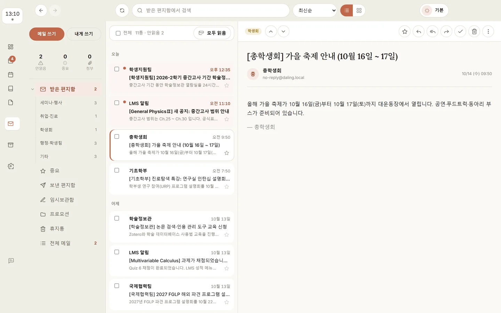
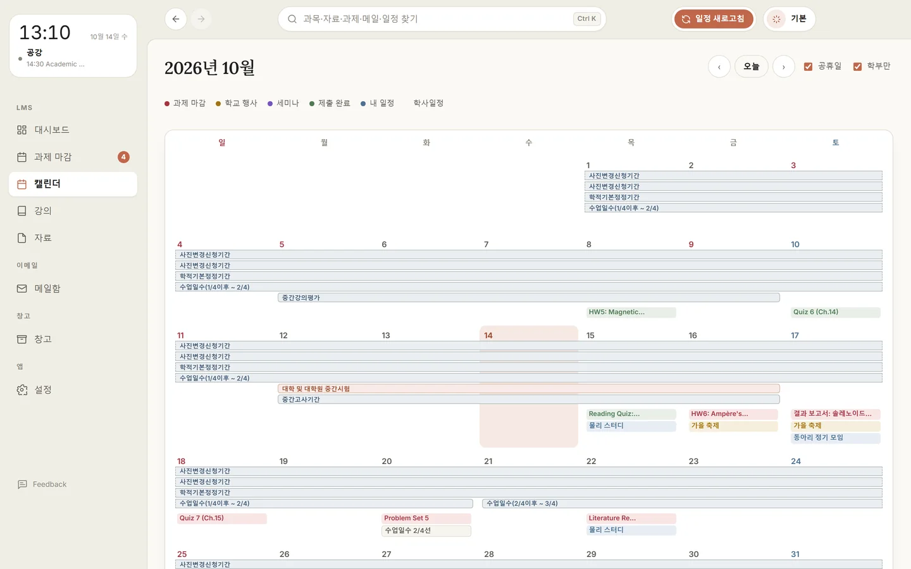
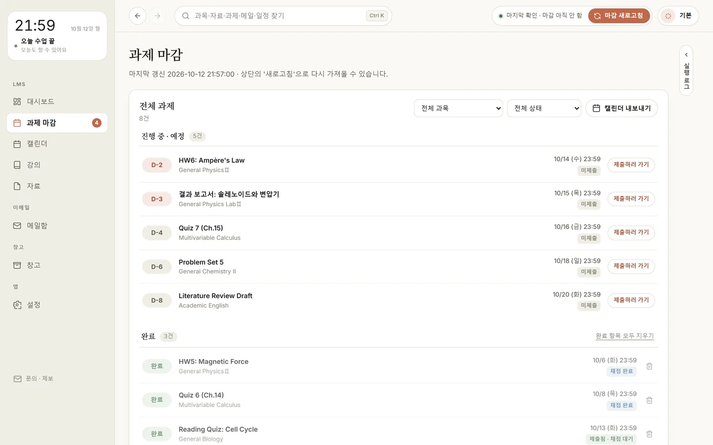

받은 메일
앱 안에서 읽고 바로 답장
- 세미나·행정·취업 메일 자동 분류
- 답 없는 메일엔 리마인드 초안
- 영어 메일 번역

01왜 만들었나요
LMS, 웹메일, 학사일정, 학교 공지. 로그인도 따로, 확인도 따로라 마감과 공지를 놓치기 쉽습니다.


PART 1
지금까지 · 직접
과목 수 × 한 학기 내내
Daling · 자동
LMS와 같은 과목·주차 폴더로. 교수님이 고친 자료는 새 판으로 바꿔 넣어요.
클라우드에도
Drive의 AutoSaver 폴더와 클라우드 폴더에도 똑같이 정리돼, 휴대폰·태블릿에서 바로 열어요.
폴더
PART 2
받은 메일

AI 메일 쓰기
과목 · 교수 · 조교
PART 3
캘린더

PART 4
지금까지 · 직접
세미나 메일이 올 때마다
Daling · 자동
메일에서 날짜·연사·장소를 읽어 일정으로. 재공지는 하나로 합쳐요.
내 캘린더와 연결
한 번 켜 두면 새 세미나가 내 Google Calendar에 들어가요. 연사·장소까지 적혀 있어 휴대폰에서도 바로 봐요.
과제 마감

03개인정보
Daling에는 개발자가 운영하는 서버가 없습니다. 자료와 계정 정보는 내 컴퓨터에 저장되고 개발자에게 보내지 않습니다. 내가 연결한 Google과, 내가 직접 부른 AI 프로그램에만 필요한 것을 보냅니다.
drive.file앱이 만든 과목·주차 폴더에 강의자료를 올리고, 이미 올린 파일인지 확인합니다.
메일에 Drive 파일을 첨부할 때는 Google 파일 고르기 창에서 고른 파일만 열 수 있습니다. 고르지 않은 파일은 보거나 고치지 못합니다.
calendar.app.created앱 전용 캘린더를 하나 만들어 과제 마감·학사일정·메일 속 일정을 넣고 고칩니다. 앱이 만든 캘린더만 열 수 있어, 내 다른 캘린더와 일정은 보지도 바꾸지도 못합니다.
DGIST LMS·메일(학교 계정으로 로그인), 학교 홈페이지·공공데이터(공개 정보), 새 버전 확인(GitHub). /ai나 'AI 에게 물어보기'를 누를 때만 내 컴퓨터의 AI 프로그램(Claude·Gemini·Codex)으로 그 일에 필요한 글을 보냅니다. Google에서 받은 정보는 광고나 AI 학습에 쓰지 않고, AI로 보내지 않습니다.
04내려받기
오픈 소스(Apache License 2.0)로 공개된 무료 앱입니다.
Windows 10·11 (64비트) · 설치 파일(.exe)
Windows용 내려받기버전 1.12.38 · 57MB
M1 이상·인텔 Mac · macOS 12 이상 · 디스크 이미지(.dmg)
Mac용 내려받기버전 1.12.38 · 78MB
인텔 Mac 은 인텔용 DMG (80MB)
xattr -dr com.apple.quarantine /Applications/Daling.app 을 실행하고 다시 엽니다.x86_64 · Ubuntu 22.04·Debian 12·Fedora 36 이상 · AppImage
Linux용 내려받기버전 1.12.38 · 250MB
chmod +x daling-*.AppImage 로 실행 권한을 줍니다. (파일 속성 → '프로그램으로 실행 허용'도 됩니다)./daling-*.AppImage 로 실행합니다../install.sh를 실행합니다.Windows는 PowerShell, Mac·Linux는 터미널에 붙여 넣으세요. GitHub 릴리스의 원본과 같은지(SHA-256) 확인한 뒤 설치하고, 다시 실행하면 새 버전으로 바꿉니다.
irm https://gudaling.dev/install.ps1 | iexcurl -fsSL https://gudaling.dev/install.sh | sh스크립트 내용: install.ps1 · install.sh · 맥 터미널이 붙여 넣기를 막으면 그 경고 창에서 허용하세요.
설정에서 LMS와 학교 메일 계정을 넣습니다. 비밀번호는 암호화해서 내 컴퓨터에만 두고, 어디로도 보내지 않습니다.
Drive와 Calendar로 보내고 싶을 때만 연결하세요. 연결하지 않아도 앱은 그대로 씁니다.
처음 켜면 화면을 하나씩 안내해 줘요. 그 뒤로는 새 자료와 메일이 알아서 모입니다.
05자주 묻는 질문
아니요. DGIST 학생이 쓰려고 만든 비공식 앱이며, DGIST가 만들거나 운영하는 서비스가 아닙니다. 중요한 마감과 공지는 LMS와 학교 공식 채널에서도 꼭 확인하세요.
아니요. 받은 자료와 설정은 데이터 폴더(Windows C:\lms-autosaver, Mac ~/Library/Application Support/Daling — 예전부터 쓰던 Mac 은 ~/.lms-autosaver, Linux ~/.lms-autosaver)에 남습니다. 필요 없으면 그 폴더를 지우면 됩니다.
회색 글씨(인사·자기소개·끝인사)는 AI 없이 앱 안의 틀로 만듭니다. AI는 /ai를 쓰고 Ctrl+Enter(Mac은 ⌘+Enter)를 누르거나 'AI 에게 물어보기'·번역을 누를 때만, 내가 컴퓨터에 설치해 로그인한 AI 프로그램(Claude·Gemini·Codex)으로 그 일에 필요한 글만 직접 보냅니다. 개발자를 거치지 않고, Google Drive·Calendar에서 받은 정보는 보내지 않습니다. 자세한 내용은 개인정보처리방침에 있어요.
앱 왼쪽 아래의 'Feedback' 버튼이나 tutleblue12@gmail.com으로 보내 주세요.
Daling is a free, open-source desktop app for Windows, macOS and Linux made for DGIST students. It collects course materials and assignment deadlines from the DGIST LMS, school e-mail, the academic calendar and campus notices into one dashboard, and organizes them into the user's own Google Drive and Google Calendar.
The app runs entirely on the user's computer. There is no developer-operated server, and no user data or credentials are ever sent to the developer.
drive.file) — uploads course materials into course/week folders the app creates, and checks whether a file was already uploaded. When the user attaches a Drive file to a school e-mail, the user picks it in Google's file picker, and the app downloads only the files picked there.calendar.app.created, calendar.calendarlist.readonly) — creates one dedicated calendar and adds or updates assignment deadlines, academic-calendar events and dates found in school e-mail there. It can only open calendars the app created; the calendar list is read only to find that calendar by name.Google user data is used only on the user's computer to provide these features; it is not sold, shared, used for advertising, or used to train AI models. Read the Privacy Policy and Terms of Service. Contact: tutleblue12@gmail.com